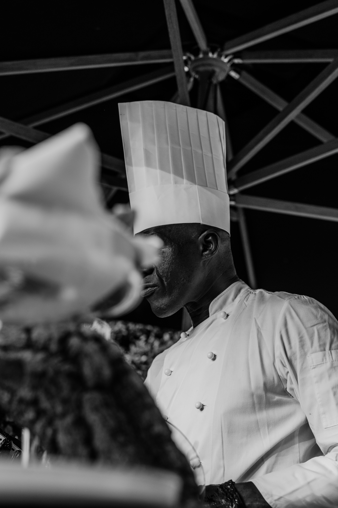
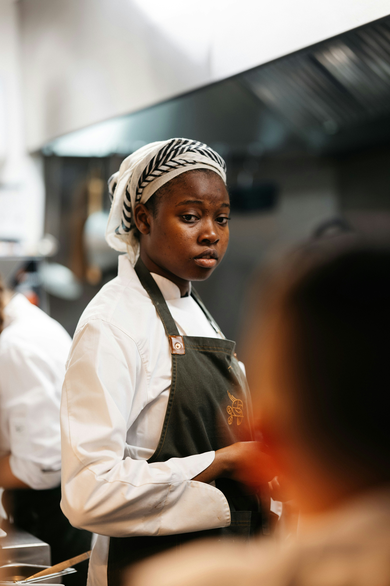
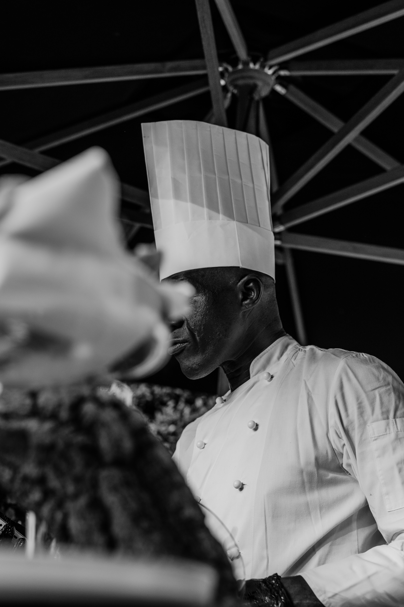
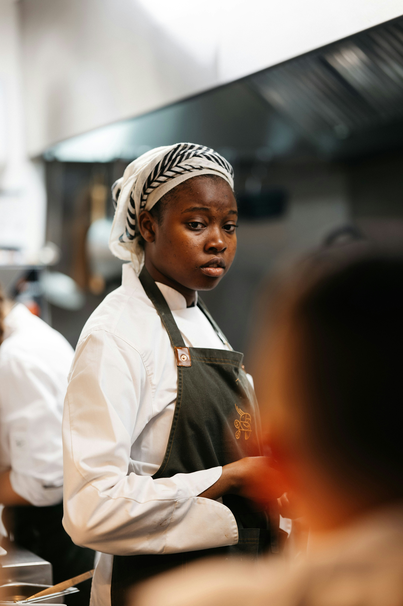
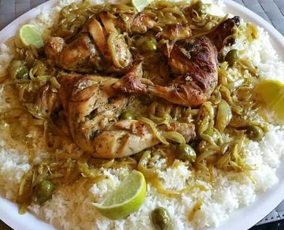
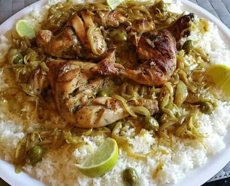

Notre Histoire
Depuis plusieurs années, Le Baobab d'Or célèbre la richesse de la gastronomie sénégalaise. Notre mission est simple : vous offrir une expérience culinaire inoubliable, mêlant tradition, savoir-faire et convivialité.
 



 
